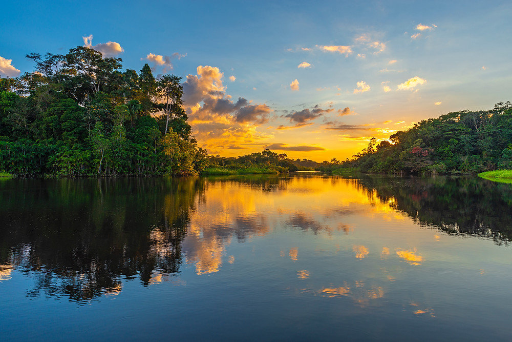
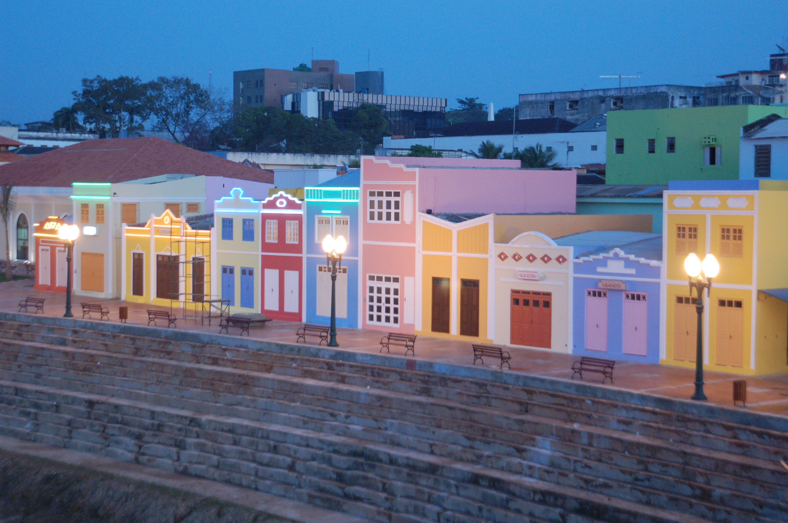
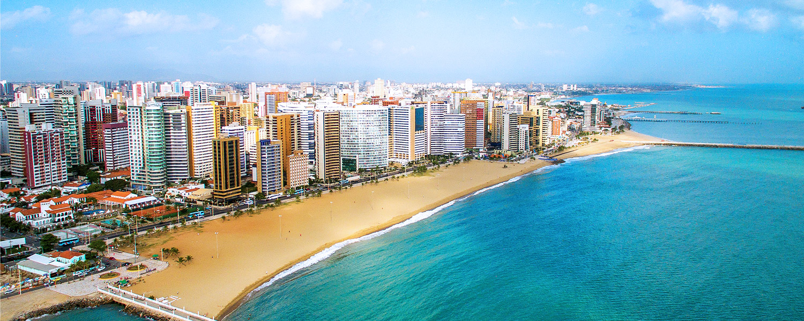
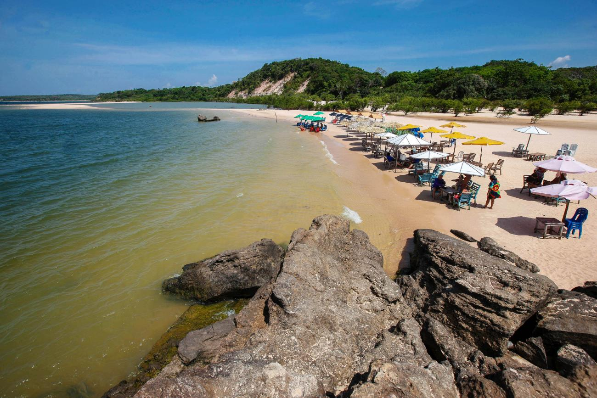
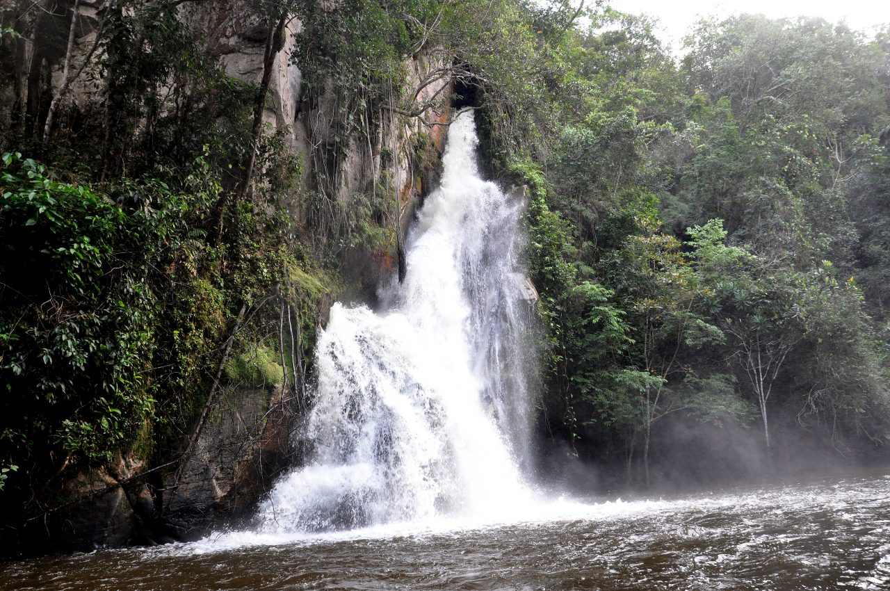
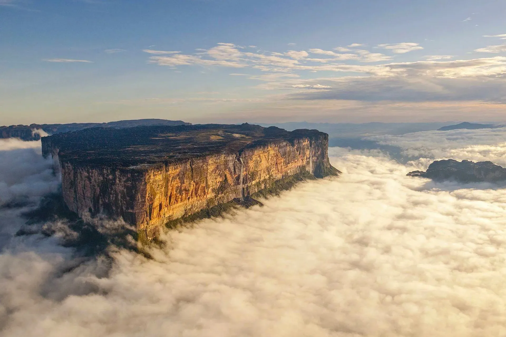
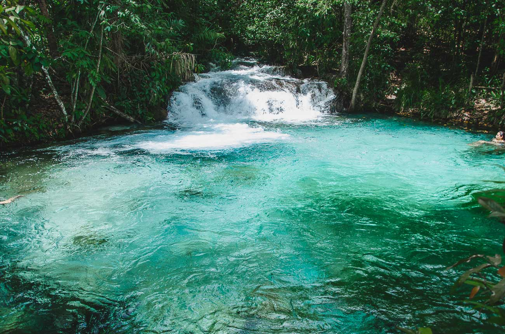

O Acre é um estado com muitos atrativos únicos, principalmente quando o foco é o ecoturismo. O roteiro Caminhos de Chico Mendes, por exemplo, tem sido muito procurado nos últimos anos. Com duração de quatro ou mais dias, ele se inicia na capital Rio Branco e segue até Xapuri, cidade do ambientalista. Um dos destaques é o Circuito de Aventura Chico Mendes, que apresenta o maior circuito de arvorismo da Amazônia.
Região Norte

Acre - AC

Amapá - AP
O principal ponto turístico do Macapá é o Monumento do Marco Zero do Equador, que está localizado na Avenida Equatorial, que conta com outras atrações bem legais, como o Estádio Zerão. No Marco Zero é possível apreciar o Equinócio, quando o monumento alinha sua sombra exatamente com a linha do Equador.

Amazonas - AM
O Pico da Neblina, localizado no norte do Estado do Amazonas, na serra do Imeri, é o ponto mais alto do Brasil com 2995,30 metros de altitude. O Parque Nacional de Anavilhanas foi criado com o objetivo de preservar o arquipélago fluvial de Anavilhanas bem como suas diversas formações florestais

Pará - PA
O Pará possui uma privilegiada posição geográfica, sua capital Belém está praticamente na porta de entrada para a Floresta Amazônica, a cidade é bem úmida pois chove praticamente todos os dias. Destaques para a Festa do Círio de Nazaré, a arquitetura imponente dos prédios históricos, e o famoso mercado Ver-o-Peso.

Rondonia - RO
Um dos destaques de Rondônia é a localização e o meio em que está inserido, a selva amazônica. O verde natural e a riqueza em biodiversidade podem ser vistos em vários locais, o que atrai muitos visitantes. O servidor Francisco de Assis Sobrinho se diz apaixonado pelas belezas naturais do Estado.

Roraima - RR
As cidades turísticas de Roraima tem atrações incríveis para todos os gostos, desde fascinantes belezas naturais até incríveis monumentos históricos, por isso que o turismo em Roraima deve ser olhado com muito interesse.
Situado na região norte do país, fazendo fronteira com a Venezuela e com a Guiana, Roraima é o estado menos populoso do Brasil, possuindo uma população de aproximadamente 600 mil habitantes.
Em relação ao turismo, Roraima é um dos estados menos explorados turisticamente pelos brasileiros, que muitas vezes desconhecem todas as belezas e maravilhas, além da cultura e história, que este lugar tem a oferecer aos seus visitantes.

Tocantins - TO
Uma viagem para o Tocantins é uma verdadeira aventura em meio à natureza, tanto entre áreas da floresta Amazônia como do cerrado brasileiro. Por ainda ser uma região pouco explorada. Para quem quer curtir a natureza, os principais pontos turísticos do Tocantins estão entre Jalapão e Serras Gerais, mas nós vamos mostrar que existem outros destinos e cidades do Tocantins que valem sua visita. em conferir com a gente e boa viagem!
